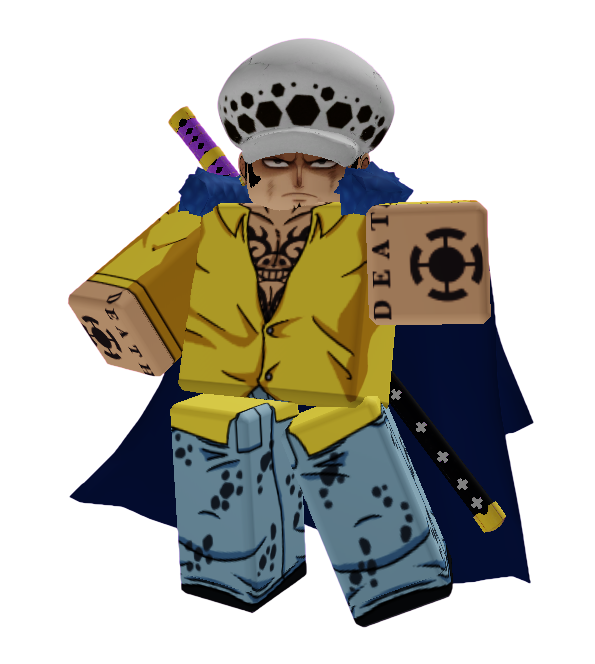

◆ ARCHIVE — LOST FILE ◆
TRAFALGAR D. WATER LAW
Status: UNKNOWN
Archive Classification: LOST FILE
Threat Level: UNKNOWN
THIS FILE IS INCOMPLETE
Quote
"There's always another move."
Short Bio
Trafalgar D. Water Law was once considered one of the smartest contestants in Anime Showdown Ultimax.
As one of Joker's earliest allies, Law helped investigate the island and uncover some of its deepest secrets.
Then...
He disappeared.
No elimination. No death. No explanation.
Only corrupted files remain.
How He Arrived
Before ASU
Law had just finished another journey across the Grand Line.
Without warning, the sea beneath him disappeared.
The sky turned white.
The next thing he remembered... was standing on the island.
Arrival
Law immediately began studying the environment instead of introducing himself.
Within days, he had become one of Joker's closest allies.
Together, they began investigating the Host.
Personality
Law is calm, intelligent, and extremely cautious.
Unlike Gyro, he rarely acts on emotion.
Every decision is carefully calculated.
He prefers planning several moves ahead before making the first one.
Current Story
UNKNOWN
The Archive contains no verified records of Law after Incident 001.
Several recovered security logs show someone matching his appearance walking through restricted areas.
Each recording ends with corruption before his identity can be confirmed.
Relationships
Allies
- Joker
- Gyro Zeppeli
- David Martinez
Rivals
- Adam Smasher
Enemies
- The Host
Threat Assessment
Current Location: UNKNOWN
Archive Classification:
MISSING CONTESTANT
Lore
ARCHIVE INCIDENT 001
During early production of Anime Showdown Ultimax, Trafalgar D. Water Law suddenly vanished from the island.
The Archive contains no footage of his disappearance.
Every contestant remembers Law. Every file remembers Law.
But every attempt to locate him ends the same way:
FILE NOT FOUND
Following the incident, Light Yagami was added to the Exit Team to replace him.
The Host has never acknowledged Law's disappearance.
Law helped create the Exit Team alongside Joker.
Recovered Hotlogs confirm he participated in multiple investigations involving the Host.
Then... every recording stopped.
Archive staff attempted to restore his file. Every backup failed.
One recovered system message reads:
SUBJECT NO LONGER EXISTS
The message appears in no other contestant's file.
Additional Notes
- Former Exit Team member.
- Last confirmed sighting before Incident 001.
- Every attempt to recover missing footage has failed.
- Some contestants claim they've seen Law after his disappearance.
- The Host refuses to answer questions regarding Law.
- The Archive still updates his page despite listing him as missing.
VOICE TRANSMISSION
Recovered Archive Recording